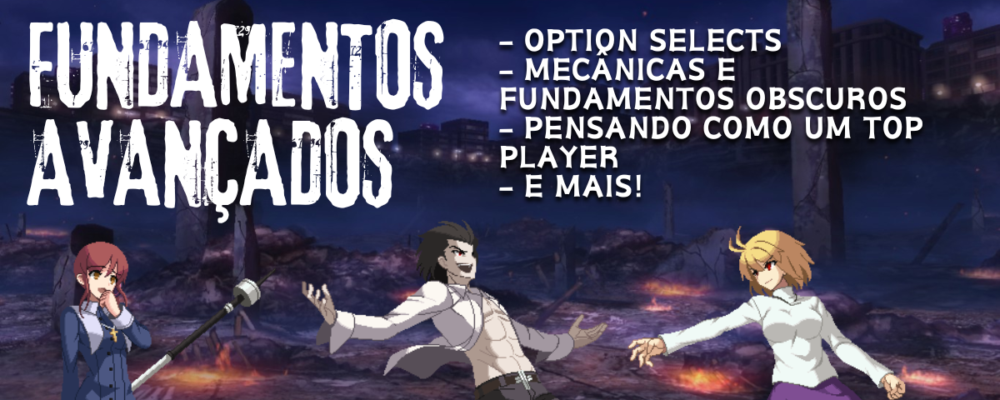

Fundamentos Avançados

Esta página tem o objetivo abordar conteúdos mais avançados e/ou complexos de Lumina, que irá abordar desde mecânicas de difícil execução até aspectos do jogo que são esquecidos pela maior parte dos jogadores.
Além disso, ela contará com uma seção que irá informar um pouco mais como os melhores jogadores do jogo fazem para ter tal nível de habilidade e também como manter ele sempre em dia.
Option Selects
Explicando de forma sucienta, um option select (OS) é um comando ou uma combinação de comandos tal qual, se feito corretamente, cobre mais de uma situação diferente em dado momento de um jogo de luta.
Alguns servem para ser usados para o ataque, enquanto outros para defesa, e é dessa maneira que eles serão abordados nessa página.
Além disso, vale mencionar que já existe um documento de Option Select feito por Nyss, um dos melhores jogadores de Lumina da América do Sul e que cobre algumas dessas opções explicando suas vantagens e desvantagens, porém um pouco desatulizadas com algumas mudanças mais recentes do jogo.
Por fim, recomenda-se que os vídeos de demonstração dos option selects sejam vistos em velocidade reduzida além da normal, para que assim tenha uma compreensão melhor de quais são os botões apertados em cada um deles, e também em qual timing eles estão sendo utilizados.
Option Selects Ofensivos
Anti-Heat OS
É o option select para ganhar de Heat. O 2A > 2A vai conectar se o oponente bloquear, e o 2A > Shield vai sair se o 2A acabar errando o oponente (por exemplo, ao ativar o heat).
Para evitar que o oponente faça esse OS em você, varie o uso entre o Heat normal e o Heat carregado, junto do timing e situações de uso do Heat, para mantê-lo menos previsível.
Input: 2A > 2A+D (or qualquer normal com A > D, de modo geral)
| Ganha de: | Perde para: |
|---|---|
| - Heat; | - Crouching shield; |
| - 6f reversals; | - Command throws invulneráveis irreagíveis pós flash; |
| - EX DPs de 5 frames de startup (just frame); | - Backdash (somente no corner e sem Moon Gauge cheia); |
| - Command throw invulnerável reagível pós-flash (somente caso tenha move invulnerável). | - BE Heat (Heat Carregado). |
2A Meaty + MD "Option Select"
Embora não seja um OS propriamente dito, é uma técnica usada para cobrir muitas opções e que pode ser efetiva se seu oponente não pode ativar seu Moon Drive. A ideia é simples: usar o congelamento de tela da ativação de MD para reagir propriamente e punir oponente.
Para evitar que o oponente faça essa opção, é só bloquear o 2A que ele fizer. Mesmo com o Moon Drive ativado, você estará somente em blockstun e não poderá ser punido por alguma opção que tenha lag ou que possa ser shieldada até o congelamento de tela acabar.
Input: 2A > 5B+C (Ativação de Moon Drive) > Reagir.
| Ganha de: | Perde para: |
|---|---|
| - Heat ou Heat Carregado; | - Defender o 2A |
| - DPs; | - Utilizar o Moon Drive de volta (caso tenha mais de 50% de Moon Gauge); |
| - Mash/Abare | - Backdash, caso seu personagem não tenha range para punir; |
Safe Jump + Anti-Heat OS
Input: j.X (Meaty) > 4D
É o option select feito a partir de um safe jump. Ao apertar o botão de shield com um leve delay, se o golpe no ar do acertar o oponente, o shield não irá sair, e se o oponente usar alguma opção que não seja atingido por isso (Heat, DPs), o shield é ativado, permitindo um punish.
A força principal deste OS é a minimização da variabilidade do jogo, já que é possível dar empty jump low, delay airdash, setups parecidos que dão double overhead e outras opções.
| Ganha de: | Perde para: |
|---|---|
| - Heat e Heat Carregado; | - Standing Shield (irá começar a interação entre shields); |
| - Command throws invulneráveis irreagíveis (caso seja um reagível, é possível pular após tocar o chão). | - Backdash (o golpe no ar irá errar e o oponente não irá terá tempo para te punir) |
Nessa opção, sairá backdash caso j.X whiffe o oponente, que costuma vencer da maioria dos reversals.
Input: j.X > 44 > X
Safe Jump + 2C OS
Nessa opção, sairá 2C após a quantidade de frames que você escolher.
Esta opção ganha de backdash, mas perde para ambos heats.
Input: j.X > 1 dl 2C
Option Selects Defensivos
Antiair + Throw Tech
Input: 1 > 3C~AD > 1 (or 1B~AD, depending on character)
Explanation: Either block an immediate strike, tech a throw, or antiair them if they jump to try to bait you into whiffing throw.
How to beat it: Delay to frame trap it (or for 3C, hit them while they're not holding downback).
Heat + Throw Tech
Input: 1ABCD
Explanation: Either activates Heat or techs a throw. Be careful if you have 4 bars, because you'll get Last Arc instead.
How to beat it: Shield the Heat activation.
Moon Skill + Throw Tech
Input: 1BC~AD (or 1 > 3BC~AD > 1, etc.)
Explanation: Block an immediate strike, use a delayed Moon Skill, or tech a throw.
How to beat it: Frame trap it if they're not in Moon Drive. If they are, all the usual countermeasures (e.g. Moon Drive cancel, jump cancel shield, etc.) apply.
Backdash + Throw Tech
Input: 1 > 4AB~D > 1
Explanation: Block an immediate strike, delay backdash, or tech a throw.
How to beat it: Hit them low or chase the backdash.
---------------- TRECHO AINDA EM CONSTRUÇÃO ----------------
Pensando como um Top Player
---------------- TRECHO AINDA EM CONSTRUÇÃO ----------------
Mecânicas e Fundamentos Obscuros
- Meter Penalty
- Proration Situacional
- Blockstun Decay
- Sprite Priority
---------------- TRECHO AINDA EM CONSTRUÇÃO ----------------
Tabela de Conteúdos
Primeiros Passos
Onde devo comprar e jogar? • Notação de Numpad • Por onde começar?
Personagens
Resumo e Arquétipos • Personagens para Iniciantes • Forças e Tier Lists
Básicos
Neutro • Normals • Moon Gauge • Shield • Rebeat • Combos
Avançado
Option Selects • Pensando como um top player